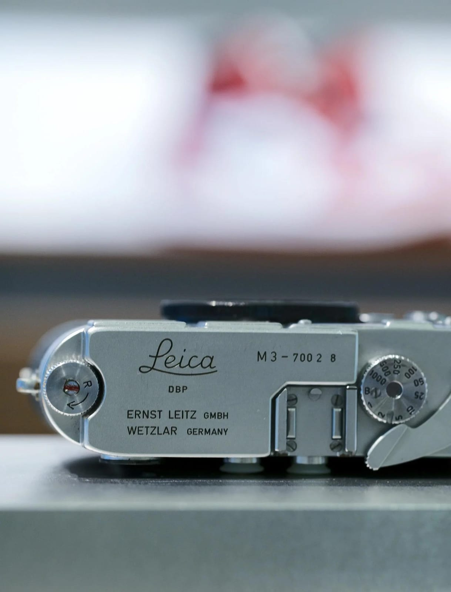

徕卡 M3

1954 年诞生的德系旁轴胶片机，黄斑联动对焦与静音快门成为传奇。
客观评测
徕卡 M3 采用 0.91 倍率联动测距取景器，自动切换 50/90/135mm 亮框，黄斑双像重合清晰锐利，是旁轴对焦的教科书。横走式布帘焦平面快门提供 1 秒至 1/1000 秒及 B 门，释放力度轻、震动小。全机械结构无需电力，机身由黄铜铸造加工，装配精度极高，六十年后多数仍可正常工作。底部开盖装片略繁琐，无内置测光需外接。整机约 600 克，配合 50mm f/2 镜头成像扎实。
主观点评
M3 是那种一上手就知道它属于黄金年代的机器。拨动对焦环时黄斑缓缓重合、快门落下那一声轻柔的『咔嗒』，都是数码机身无法复制的仪式感。用它拍照会被迫慢下来：测光靠经验、对焦靠手感，每按一次快门都值得斟酌。它不追求参数，却把机械之美做到极致，六十年后依然能装上新胶卷出门。对收藏者而言它是硬通货，对拍摄者而言它是一种信仰——提醒我们摄影最初的模样。
优点与不足
- 黄斑双像重合清晰锐利，联动对焦顺滑精准
- 全金属机身手感扎实，快门声轻柔克制
- M 卡口生命力极强，六十年后镜头仍可通用
- 无内置测光，拍摄前需要额外测光环节
- 布帘快门忌讳直射强光，保养维护成本高昂
参数规格
| 类型 | 35mm 胶片旁轴相机 |
|---|---|
| 画幅 | 全画幅 24×36mm 胶片 |
| 镜头卡口 | 徕卡 M 卡口（M 卡口系统开山之作） |
| 取景器 | 0.91× 亮框联动测距取景器，自动切换 50/90/135mm 框线 |
| 对焦 | 双像重合黄斑手动对焦 |
| 快门 | 横走式布帘焦平面快门，1s-1/1000s 及 B 门 |
| 测光 | 无内置测光，需外接测光表或凭经验估算 |
| 过片 | 拨杆过片上弦，可选配马达过片器 |
| 重量 | 机身约 600g（含 50mm f/2 镜头约 780g） |
| 尺寸 | 138×77×36mm |
| 电源 | 全机械结构，无需电池 |